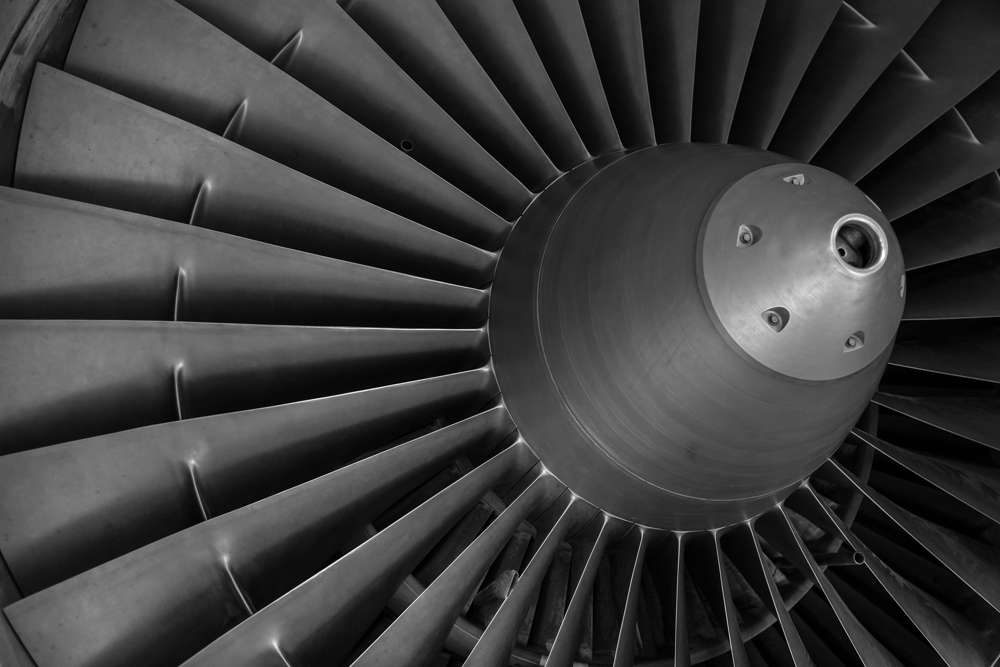
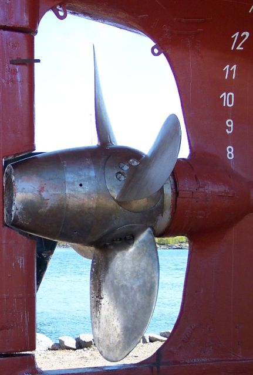
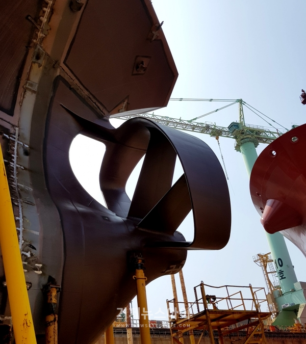
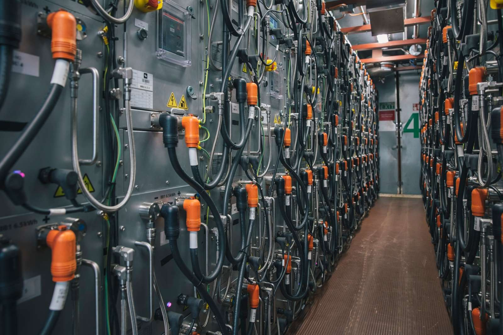
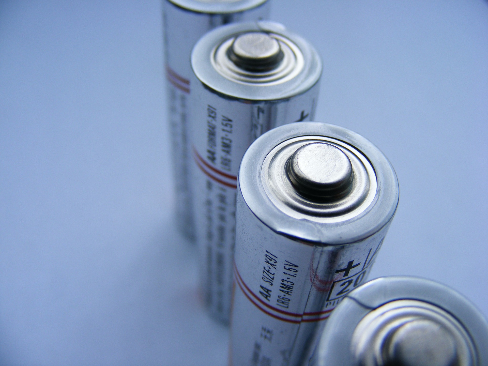
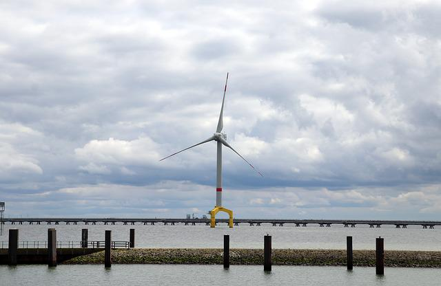

home>기술개발>신기술
신기술
- 신기술 개발에 앞장서겠습니다.
- 어려운 경영환경 속에서도 조선·해양 분야의 선도기업으로 굳건히 자리매김할 수 있도록 중장기 선행기술을 확보하고 확보 기술의 상용화를 통하여 신제품 및 신기술 개발에 앞장서겠습니다.
-
DEVELOPED
-
2022
에너지 저감장치
-

- SAVER Air
- 공기 윤활 시스템(SAVER Air)은 선체 바닥에 공기를 분사하여 해수와의 마찰 저항을 줄여 선박의 연비를 향상 시키는 친환경 시스템입니다.
- 삼성 중공업이 자체 개발한 SAVER Air 를 170,000m3급 LNG선에 적용한 결과, 5% 이상의 연료 절감 효과가 입증되었으며, 향후 다양한 선종에 확대 적용해 수주 경쟁력을 향상시키고자 합니다.
-

- SAVER Stator / Stator-D
- 삼성중공업이 독자 개발한 SAVER Stator-D는 선박의 프로펠러로 유입되는 해수의 흐름을 균일하게 함으로써 프로펠러의 추진력을 증가시켜 연비를 향상시키는 연료 절감 장치입니다.
- 삼성중공업은 SAVER Stator-D를 선박에 적용해 약 2%의 연비 절감 효과를 입증했으며, 이를 통해 향후 수주 경쟁력 강화에 기여할 것으로 기대합니다.
-

- SAVER CAP
- 대형 컨테이너선의 선수에 설치해 선체 주변의 해수 흐름을 제어함으로써 연비를 향상시키는SAVER CAP을 개발했습니다. SAVER CAP을 통해1.8%~3.7% 수준의 연비가 개선되며 선체 진동도 줄어 선수 의장품과 컨테이너 박스의 안전한 보관이 가능합니다.
친환경 전력시스템
-

- 배터리 시스템
- 삼성중공업은 배터리 충방전 알고리즘을 포함한 선박용 전력 제어 시스템 기술(EMS)을 독자 개발하였을 뿐만 아니라, 삼성SDI와 공동으로 선박용 리튬이온배터리 시스템의 국산화 개발에도 성공하였습니다.
-

- 연료전지 시스템
- 연료전지 기술은 수소와 산소의 전기화학적 반응을 통하여 화학에너지를 전기에너지로 직접 변환시켜주는 장치로, 최근 글로벌 환경규제 강화에 따라 선박 배기가스 저감 기술의 하나로 연료전지에 대한 관심이 증가되고 있습니다.
엔지니어링
-

- 해양 엔지니어링
- 성능과 안전은 무엇보다도 우선되어야 합니다. 이를 위해 삼성중공업은 Process, Safety, 진동소음 등 핵심 엔지니어링을 자체수행하고 기술선도 함으로써 기존 제품에 대한 성능/안전을 세계 최고 수준으로 유지할 뿐만 아니라 새로운 Concept 제품을 실현해 오고 있습니다.
- 삼성중공업에서 수주한 FLNG, FPSO, FSRU, FSO 등 다양한 선종에 대한 엔지니어링 혁신은 지금도 지속적으로 진행되고 있습니다.
-
- 해양 프로젝트 재료 엔지니어링
- 기존 해양플랜트 재료 엔지니어링 기술은 해외 의존도가 높아 프로젝트 수행의 리스크가 높았습니다. 이에 삼성중공업은 자체 재료 검증 및 재료 선정 프로세스를 독자 개발함으로써 프로젝트 수행 리스크를 완화하고, 기술 자립화를 통해 해양 엔지니어링 설계 기술 경쟁력을 확보했습니다.
-
- 안전학습
- 삼성중공업은 안전을 최고의 경영 가치로 생각하고 있으며 이를 위해 제품의 Concept 단계부터 안전한 시스템 및 운전환경을 만들고자 국제 표준에 부합하는 다양한 Safety Study를 설계 단계 별로 진행하고 있습니다.
- 특히 화재, 폭발, 인명탈출 등에 대한 Safety Study 전문 인력 및 시스템을 확보하고 있으며 국내외 전문기관과 지속적인 기술개발을 함으로써 Safety 기술 발전을 선도하고 있습니다.